APKALLU FISH
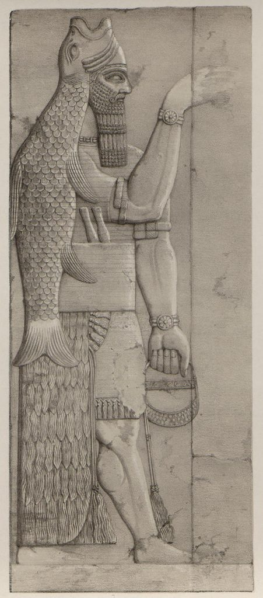
Introduction
In Mesopotamian art (especially Neo-Assyrian), the Fish Apkallu are often depicted as human-men wearing a full fish-skin cloak, with the fish's head covering the human head like a raised round cap or hood, the fish's mouth appearing open over the forehead, and the skin hanging down the back to the tail.
This is a term used in Mesopotamian texts and inscriptions to refer to a class of wise beings associated with the beginnings of civilization, often depicted in their earliest forms as humans wearing fish skin. These entities are attributed with an educational and civilizational role, linked to the establishment of early knowledge such as laws, rituals, architecture, and writing, and are symbolically associated with the god Enki/Ea, the god of deep waters and wisdom. This form is understood as a representation of the transmission of knowledge from the primordial, water-related world to organized human society.
History
There made its appearance, from a part of the Erythraean Sea which bordered upon Babylonia, an animal endowed with reason, who was called Oannes. The whole body of the animal was like that of a fish; and had under a fish’s head another head, and also feet below, similar to those of a man, subjoined to the fish’s tail. His voice too, and language, was articulate and human; and a representation of him is preserved even to this day.
The earliest statues, small fish-men, were believed to possess protective properties, shielding the home from evil. The human-man Umanu is mentioned in the list of kings and sages of Uruk, the ancestors of all the gods of Anu, and is primarily referenced in the writings of Berossus, although the eagle is sacred to Enki/Ea.
According to the myth, human beings were initially unaware of the benefits of culture and civilization. The god Enki sent from Dilmun, amphibious half-fish, half-human creatures, who emerged from the oceans to live with the early human beings and teach them the Me (moral code), the crafts, the arts, and other aspects of civilization such as writing, law, temple and city building and agriculture. The apkallu remained with human beings after teaching them the ways of civilization, and served as advisers to kings.
They are first referred to in Erra Epic by character of Marduk who asks "Where are Seven Sages of the Apsu, the pure puradu fish, who just as their lord Ea (Enki), have been endowed with sublime wisdom?" According to Temple Hymn of Ku'ara, all seven sages are said to have originally belonged to city of Eridu. However, names and order of appearance of these seven sages are varied in different sources. They are also referred to in the incantation series Bit Meseri's third tablet. In non-cuneiform sources, they find references in the writings of Berossus, 3rd Century BC, Babylonian priest of Bel Marduk. Berossus describes appearance from the Persian Gulf of the first of these sages Oannes and describes him as a monster with two heads, the body of a fish and human feet. He then relates that more of these monsters followed. The seven sages are also referred to in an exorcism text where they are described as bearing the likeness of carps
Birth
In Levantine mythology, Dagon, also known as Dagan, is the son of El by his wife, Asherah. The Heaven (El) and the Abyss (Asherah) in a divine union bore seventy gods and goddesses at once. Dagon, the god of earth, was among this litter of deities. Indeed, the earth god was among the Elohim, the children of God, many of whom married humans and bore the Nephilim (Genesis 6)
Theories
The Apkalu are the Seven Sages, created by the god Enki (god of wisdom and water) to emerge from the Apsu (the underground freshwater ocean) and teach humankind the foundations of civilization before the Great Flood. They are symbols of divine knowledge, depicted as men wearing fish or bird skins, carrying purifying tools such as cones and buckets for protection against evil. Their role was as advisors to early kings, such as Ziusudra (a Flood survivor, similar to Noah).
Scholar Zimmern posits that the Apkallu (the Seven Sages) are identified with the "Puradu" fish (Sumerian: Suḫur-ku₆), directly linking them to the figure of Oannes. According to Berossus, this amphibious being emerged from the river to eradicate human ignorance and impart the arts of civilization and craftsmanship. Furthermore, the civic ritual of "Kar"—essential to the founding and administration of the city—utilized the Apkallu models classified under the title "Umu." This suggests that urban planning and social order were viewed not as mere human inventions, but as terrestrial reflections of a cosmic blueprint established by these sages. [Image depicting the 'Apkallu' as guardians of the city gates, holding the sacred cone and bucket used in the 'Umu' rituals]
The "Elite Memory Theory" posits that the apkallū were not hybrid beings but originally represented a real human class of elites, including priests, engineers, astronomers, and doctors. Over time, these figures were deified and depicted in mythological forms. The "fish" imagery is explained as a representation of them wearing ritualistic fish skins, stemming from their work near rivers, marshes, and water temples, as well as their deep connection to purification rites. Consequently, the "fish head" description was merely a ceremonial designation that evolved over the ages into a mythical image of non-human entities.
This theory supports the idea that civilizations were not as isolated as previously thought, citing the Apkalo—a creature or group of creatures believed to have traversed continents—as evidence of such communication. Proponents of this theory argue that the appearance of the same shape (such as a fish head or wings) in geographically dispersed regions is evidence of global contact or extraterrestrial intervention, specifically from beyond Antarctica. The pouch or cone carried by the Apkalo is interpreted as an educational or technological tool.
The Apkalo are interpreted as beings of "Apzu" (primordial waters) capable of crossing invisible barriers, such as an "ice wall" around Antarctica that hides additional lands or other worlds. The Apkalo are symbols for accessing hidden dimensions or civilizations through water.
The Sumerian term "Apkallu" hints at "composite creatures" or spiritual entities operating within the "Abzu"—the realm of deep freshwaters and rivers under the absolute dominion of the god Enki. Consequently, the Apkallu are regarded as the (messengers), emissaries, and sages of Enki, the Lord of Wisdom. Their hybrid forms—blending human features with those of fish or birds—symbolize their role as intermediaries between two worlds: the primordial depths of the Abzu (the source of raw knowledge) and the terrestrial realm where civilization is manifest.
On blogs like LostHistoryBlog, AtlanteanChronicles, and ForbiddenHistory.net, you find repeated reference to the idea that after the Great Flood, several men from different ships reached multiple continents—and they founded ancient civilizations.
Some thinkers (particularly in philosophical forums like Aeon Byte Gnostic Radio and MythosandLogos.org) see these figures as representing a single metaphysical archetype: The "Teacher from the Deep," a teacher from the depths who symbolizes the wisdom that emerges after every cosmic catastrophe.
In his YouTube video "Atlantis' Hidden Deities: A Deep Dive with Manly P. Hall," he discusses how the myths surrounding Oannes and Dagon, as well as other deities such as Poseidon and Triton, represent symbols of lost wisdom from ancient civilizations. Hall argues that these beings are not merely mythical figures, but rather embodiments of the spiritual and philosophical knowledge that once existed in Atlantis, the lost continent.
Some scholars believe that the Apkalu are not real beings, but rather symbols of priests or human sages in Mesopotamian rituals. The fish-like garb represents fertility and water (the source of life in the arid region), and priests wore similar attire during rituals to invoke divine wisdom. This explains their use as protective amulets in palaces and homes.
The "Ritual Transformation" theory suggests that the apkallū were originally ordinary humans who, during religious ceremonies, would "embody" the protective entity through the use of specific ritualistic clothing, masks, and statues. This phenomenon is globally recognized throughout human history, as seen in the use of animal masks, the depiction of gods with falcon or crocodile heads, or priests wearing full ceremonial attire. Consequently, the hybrid form (such as the fish-man) is not a description of a real biological being, but rather a ritual tool designed to personify power and sanctity.
The prevailing interpretation among specialists in Assyriology and Akkadian studies is that the Apkallu are primarily mythical and ritual figures. Symbolic statues were erected in their honor, depicting them in various forms—such as fish-man, bird-man, or human-headed beings—to serve as ancient protectors and teachers. They are viewed as embodiments of ancient traditions of wisdom and purification, closely associated with the god Ea (Enki) and the waters of the Apsu (the freshwater abyss), reflecting their symbolic role in maintaining the cognitive and spiritual order of those civilizations.
Dagon An Ancient Sumerian Deity/Dogon Tribe. Both Have The Same Knowledge Of The Nommos People, The Anunnaki 'Sky People' Which Come From Sirius B An Constellation In The Sky Referred The Sirius Star System By NASA, Which The Ancient World Had Knowledge Of Thousands Of Years Ago. The Ancient Dogon Tribe Derive From Ancient Egypt As They Stated To The Western Explorers, In The 1930s - 1940s And 1950s. The Right And Left Both Represent The Same People 'The Nommos' Which Are Also Connected To The Anunnaki, Which Are Our Ancestors, This Is The Untold Facts And History Of Africans, Not Told In The Western World.
David Hatcher Childress and Zechariah Sitchin, in their writings on "Gods from the Sea," state that water gods from various cultures (such as Dagon, Enki, Oannes, Chaac) represent unified cosmic entities that came from the deep oceans or from beyond Earth.
Some Mayan anthropologists such as Linda Schele have spoken of Chaac's symbolism as a "god of crossing," similar to Dagon's role as a god between sea and land.
Some researchers believe he is "Abakalu," one of the seven pre-Flood sages. He is said to have brought knowledge and wisdom to humanity. He is mentioned in ancient Sumerian texts and was also referred to by the Zulu tribes of Africa.
In civilizations such as the Phoenicians, Indians, Chinese, and Mayans, myths described “intelligent sea creatures” who visited humans, taught them agriculture, navigation, and the arts, and took different forms depending on the region.
The story is repeated in dozens of civilizations, saying: “A being or a human came from the sea after the flood, taught humans agriculture, construction, language, and the stars, and then returned to the sea.”
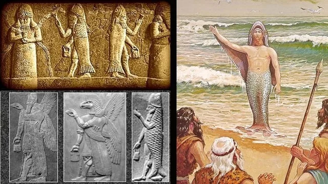
Since the earliest ages, the story of a mysterious being emerging from the sea after the great flood has echoed across civilizations — a bringer of wisdom, who teaches humanity the secrets of survival and civilization. In Sumer, he appeared as Oannes, half man and half fish, rising from the depths of the Persian Gulf to teach writing, arts, and sciences, returning each night to the waters from which he came. In Babylon, he became Dagon, god of the sea and fertility, who brought from the waters the secret of agriculture and life, symbolizing the eternal cycle of creation between water and earth. In ancient Egypt, he was Osiris, the divine teacher who also came from the water; some texts tell that his body was cast into the Nile and resurrected from it, making him the god of rebirth and fertility — for in his myth, water is the gate of immortality and renewal. In Greece, the same archetype appears through Poseidon and Triton, sea gods who grant life and knowledge from the depths; Triton blows his conch shell to calm the storms and guide sailors by the stars. In the Andes of South America, Viracocha rose from the waves of Lake Titicaca after the great deluge to create the sun, moon, and stars, and to teach humankind language and wisdom, clothed in a white robe of light. Among the Maya, Chaac-Ich emerged from the celestial sea after the flood, bringing rain and abundance to humanity. And in ancient India, the same principle took form as Matsya, the first incarnation of Vishnu, the sacred fish who saved humanity from the flood and guided man toward knowledge and salvation. Thus, across continents and tongues, these myths converge upon a single symbol — a divine aquatic being rising from the depths of chaos to grant humankind the light of knowledge, restoring balance between sea and land, between drowning and rebirth, between the end and the beginning.
Some theories see the Apkalo as ancestors or counterparts of the “Observers” in the Book of Enoch, where they are heavenly or angelic beings who fell to Earth, taught humans the alphabet and sciences, and then gave birth to giants (the Nephilim).
In Freemasonry tradition, the Apicals are interpreted as symbols of the preservation of Antidelovian (pre-Flood) wisdom via "pillars of wisdom"—like those mentioned in the Matthew Cook manuscript (circa 1450 CE), where the sons of Cain (or Seth) invented the arts and sciences, inscribing them on fire- and water-resistant stones to survive the cataclysm. This connects the Apicals to the Masonic ancestors as guardians of secret knowledge, drawing on Mesopotamian myths such as Adapa or Awana, and is seen as evidence of a "world secret order" stretching back to antiquity.
Some entries link it directly to Noah as a symbol of renewal, rather than just as a historical person.
Some independent scholars of “common mythology” have spoken of a wise being or human who came from the sea to teach humanity, and is sometimes linked to the figures of Noah, Idris, Atlantis, or Owannes.
Some researchers, especially on Ancient-Origins.net and MythosDecoded, suggest that Oannes and Dagon are deified versions of Noah. All three emerge after a great flood, teach humanity the ways of life and wisdom, are connected to the sea or the ark, and are seen as beings from beyond. Together, they embody a single archetype — the wise survivor rising from the waters to rebuild the world.
Oannes is based on the figure of Noah from the Bible. Oannes was a fish god who came out of the water to impart sacred wisdom that had been forgotten (after the flood). The Greek god Janus is also the same figure which is why he is said to have two faces, one looking forward and one looking back. They were a figure of two worlds (pre-flood and post-flood).
THE POWER
The name Arotrios, by which Dagon was also called, means “plowman,” as well as “of agriculture.” The name Dagon, Siton in Greek, is an archaic word for “Grain.” Indeed, Dagon the plowman is the god of grain, the god of agriculture for that matter. Dagon is god of fertility, and was the deity who allowed the corn to grow, bid the wheat to flourish, and took care of vegetation on earth. In the field lies the power of the god of earth. The fertility god made the earth fertile and fruitful.
Symbols
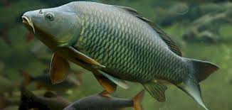
Cuneiform texts describe the Seven Sages (Apkallu) as belonging to the species of "Puradu" fish or "Suḫurmāšū" fish. Scholars have interpreted these species as the large Carp (Barbel) common in the rivers of southern Mesopotamia. This association between the Sages and fish reflects the ancient view of them as beings emerging from the Abzu (the primeval freshwater depths). In this context, the Carp became a potent symbol of wisdom and fertility linked to the god Enki, merging natural river life with divine intellectual illumination.
Cap
In Babylon and other pagan cultures, religious leaders (priests) wore fish-head crowns. In Babylon, they believed that the god wore a fish-headed hat. The worship of Dagon, the fish god, was very popular in the Medes, Persia, Egypt, Assyria, and Rome.
Fish skin
The fish skin covering the character is actually intended to convey information about the material of the cloth: it may be metallic in color and cover from head to toe - which is the actual application when we do X-rays or any radiation-related technology.
Some scholars claim that fish scales refer to silver suits or armor made of fish scales that have defensive power and help protect the body from all disasters.
The fish symbol was used as a derogatory insult against Christ, coinciding with the use of the word "Christos" to mock Christ. Originally, the symbol represented the Greek god Dagon, the god of fish, and was inscribed with the phrase that forms the mystical name "Iktos," one of the names of the Greek/Roman sun god Bacchus/Dionysus/Tammuz. The symbol later became an insult to Christians and was subsequently found on synagogues and artifacts. The five Greek letters of "Iktos" stand for "Jesus Christ, Son of God, Savior," a name revered by the Roman Catholic Church.
Pine cone
Bucket
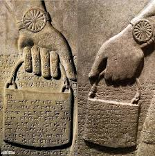
The Banduddu ('bucket' in Akkadian). Assyrian. It is usually held by an Apkallu (A Mesopotamian sage or demigod). According to scholars,it was filled with a fluid or pollen and the Apkallu and/or priest would dip a pine cone into it and sprinkled the Assyrian kings to purify them.
Compare
Babylon
Uanna/Adapa may have been the Sumerian fish god whose name became a synonym for wisdom. According to a Sumerian temple hymn, the seven sages came from Eridu, the oldest Sumerian city, which was then located on the coast of the Persian Gulf. This may explain why the sages were described as having emerged from the sea and had a fish-like body.
written about in the third century BCE by Babylonian author Berosos, who just happened to be a priest of Bel. Oannes was purported to be the one who gave wisdom to men. This is a depiction of Him in an ancient Mesopotamian Cylinder Seal – clearly meeting Berrosus’ description of him as a god whose whole body was a fish, and under the fish’s head was a man’s head and under the fish’s tail were a man’s feet. And to the right, I have included another colored engraving, depicting a very altered version – looking more like a man in a fish costume and less like a fish god. Creative license, I suppose.
Oannes: the Extraterrestrial God who gave his knowledge to humanity Academics who have studied about Oannes have different perspectives. One of the theories stand out from the others. The theory is that ancient sumerians were visited by extraterrestrials and they believed them to be gods
In Babylonian mythology, Dagon was not one of the “lesser gods,” but one of the ancient supreme gods (Anunnaki). In some texts, he was described as the father of the god Hadad/Adad (god of storm and rain). In other texts, he was considered the judge of the gods, imposing punishment or blessing according to the deeds of humans.
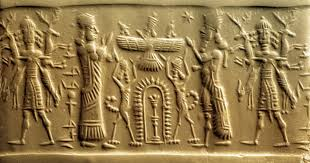
An ancient Assyrian cylinder seal (Morgan Seal 773) depicting a figure wearing a fish-skin cloak tending to a sacred tree (8th-7th century BCE), originating from Mesopotamia, specifically the Early Dynastic III period (2600-2300 BCE). It shows a complex scene of gods and mythological figures engaged in rituals or mythological events.
The seal is intricately carved, featuring human-like figures with fish-like attributes, possibly representing Apkallu sages or priests in fish attire, alongside a central sacred tree. The figures seem to be involved in a symbolic interaction, possibly relating to fertility, divine blessing, or cosmic order. The material of the seal, subjected to millennia of burial, shows signs of wear and alteration, adding depth and mystery to its existence.
The first region of his worship was Mari (on the Euphrates River in present-day Syria), followed by Ebla, Assyria, and Babylon. His name is mentioned in texts dating back to around 2500 BC, centuries before the appearance of the Philistines.
Over time, especially in the coastal regions of Syria and the Phoenicians, the image of Dagon became confused with that of another creature from Babylonian mythology called Oannes.
Palestine
Dagon, or dgn, in Semitic languages – in Ugaritic, this word dgn can be translated as grain, and in Hebrew dagon/dagan is also an archaic word meaning grain. This meaning lines up with his association with Ba’al, the Canaanite storm god who also has ties with fertility and the harvest. In Ugaritic literature, Dagon is the father of Ba’al, just as El is the father of Ba’al in Canaanite records. Sanchuniathon, who was a Phoenician author circa 1200 BC (a contemporary of Semiramis, Queen of the Assyrians, according to Porphyry), said, “And Dagon after he discovered grain and the plough, was called Zeus Arotrios.” Arotrios was the designation of Zeus as the ploughman.
A long-standing association with a Canaanite word for "fish" (as in Hebrew: דג, Tib. /dɔːg/), perhaps going back to the Iron Age, has led to an interpretation as a "fish-god", and the association of "merman" motifs in Assyrian art (such as the "Dagon" relief found by Austen Henry Layard in the 1840s). The god's name derives from the root *dgn 'to be cloudy', implying that he was originally a weather-god. His being associated with clouds, and thus with rain indicates his strong role as an agricultural god.
Dagon, a deity worshiped in ancient Mesopotamia by the Sumerians, Akkadians, and later the Philistines, was associated with fertility, agriculture, and the sea. Often depicted as part man and part fish, he symbolized life-giving forces tied to both land and water. His worship dates back to the third millennium BCE, with temples and inscriptions honoring him.
Some scholars (such as W. F. Albright and Langdon) have considered Dagon to be an independent deity but belonging to the same Sumerian-Babylonian pantheon that includes the Anunnaki.
Marna signifies The Lord in Aramaic. He was the principal god of Gaza, who was worshipped well into the 5th century CE. Only in the 13th century, a Jewish Bible commentator wrote that Dagon was half fish and half man. The source of the confusion may lie with the sea-faring Canaanites or Phoenicians who first gave Dagon his fishy attributes because of false etymology: dâg in their language meant fish, and they started depicting Dagon as a hybrid man-fish
In ancient Philistine cities such as Ashdod, Ekron, and Gaza, Dagon was considered the chief god or father of the god Baal-zebub (according to some Phoenician inscriptions).He had great temples and structures, the most famous of which was the Temple of Dagon in the city of Ashdod, which was mentioned in the Old Testament (1 Samuel).
In later Babylonian-influenced accounts, popularized in the cities of Gaza, Ashdod, and Ekron, Dagon was said to have emerged from the sea when the earth was mired in ignorance and famine, and to have come to teach humans how to plant wheat and bake bread.
Among the myths passed down by the Philistines after their contact with the Israelites, it was said that Dagon encountered a strange god who came from the East, carrying a “box of light” (which in the Torah is the “Ark of the Covenant”).
Shaped from stone, the central idol in the temple depicted a deity who was half-fish, halfman. Surviving images resemble a mermaid with a curly Sumerian-style beard. The biblical account does not refer to this idol as an idol—or, as we might, a statue. The idol and the god are treated as synonymous. The ark sat “beside Dagon.” The stone idol itself was the object of Philistine worship. To pray to Dagon, one prayed to the stone.
The ark, it seemed, had needed no rescuers after all. Following the fall of Dagon, a plague descended on the Philistines. For seven months, they shifted the ark from one location to the next, disease following at its heels, until the Philistines themselves handed it back—along with a guilt offering to make amends. While the Israelite army was defeated in battle, their God with no army brought the enemy to its knees.
Phoenician
He was mentioned in Phoenician inscriptions as the father of the god Baal Zebub or Baal Shamin in some cities. Coastal cities such as Ugarit, Sidon, Tyre, and Ekron worshipped him, and he had huge temples in Aradus (Arwad).
As the Phoenicians expanded their maritime trade, their religious symbols changed. Dagon began to be depicted on inscriptions and seals as a half-man, half-fish creature, resembling aquatic deities such as the Babylonian Owannes. He was sometimes called "God of the Fertile Deep" or "Lord of the Tides."
The Festival of Dagon was celebrated at the end of the harvest season, when bonfires were lit on the beaches to honor him—this festival is the origin of what later became known on the Lebanese and Syrian coast as the Festival of Light or “Nardogan.”
It is clear from the Phoenician history account recorded by Philo of Byblos that the word Dagon (Hebrew: Dagan), which he translated into Greek as Seton, does not mean "small fish," but "seed."
Greek
The fragments of the Babylonian historian Berossus provide a fascinating account of the appearance of the Seven Sages. While the inhabitants of Chaldea lived in a primitive state, a mysterious being named Oannes emerged from the sea. His body resembled that of a fish, yet beneath it, he possessed a human head and feet. This being taught humanity writing, sciences, arts, engineering, and jurisprudence, along with the principles of agriculture—bestowing upon them all the foundations of civilization. Oannes spent his days among men without sustenance, and at sunset, he would descend back into the depths of the sea, being amphibious. He was followed by similar beings known as the Apkallu.
He describes Dagon as a "fertility god" represented by wheat and fish, and sometimes depicted with a human body and a fish tail. He notes that these features are "similar to those of Greek sea creatures such as Triton/the Myrmen."
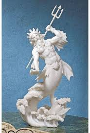
In some late Greek texts, Triton is said to be an ancient being older than the Olympian gods, suggesting that he is a legacy of an older seafaring religion—perhaps of eastern origin coming via the Phoenicians (who worshipped Dagon).
Scholars of comparative mythology (such as Robert Graves and Walter Burkert) note that Triton is the Greek form of Dagon, both a half-man, half-fish aquatic creature who rules the sea and symbolizes ancient wisdom and fertility.
Roman
Among the Romans, Poseidon was transformed into Neptune, the god of the sea and waters, and was sometimes depicted as a bearded man holding a trident.
But in popular engravings, images of Neptune were found with fish tails or surrounded by half-human, half-fish creatures called “Tritones.”
America
Yes, there is a clear mythological similarity between Chaac-Ich and Dagon: both are fertile water deities. Both represent a gateway between two worlds (sky and water, or sea and land). Both are associated with blood and sacrifices. And both—according to some Gnostic texts—may be local representations of the same ancient aquatic cosmic entity (which some scholars call an “Enki-type deity”).
Some carvings show him with scales and fins on his arms and legs—something symbologists associate with Dagon and Owans of Mesopotamia.
Chaac (also spelled Chac or Chaahk) is the Mayan god of rain, lightning, and thunder. He played a central role in ensuring rain and crops—especially maize (corn)—and was therefore an important cult figure in Mayan agricultural society.
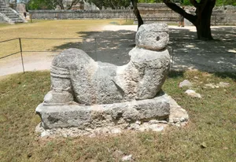
Some recent researchers associate Chaac with entities "from heaven," such as the gods of global floods (the "Gods of Water" theory). Like associating Dagon with the Anunnaki, the difference is only in names.
Recent writings on Chaac-Ich (particularly in comparative mythology blogs such as Mayalogia and Ancient Origins) say that his image represents “a marriage between the Eastern god Dagon and the Maya water ritual.”
Among the Aztecs, Tlaloc appears as the god of rain and underground water. However, some inscriptions (especially in Teotihuacan) show him with blue skin, round eyes, and flippers, which has led some researchers (such as Miguel León-Portilla) to suggest that Tlaloc was originally a sea creature, half-man, half-fish. They believed that he lived in a watery world beneath which were the souls of children, just as Dagon was worshipped as the god of the sea and life.
Some researchers' posts on blogs like MythicalAztecGods.com and LostCivilizationsWiki hypothesize that Tlaloc and Dagon are “two faces of the same great sea god,” through Phoenician influence that reached the Americas in pre-Columbian times.
In Inca mythology of the Andes, we find the goddess Mama Cocha, meaning "Mother of the Sea." She was depicted as a half-woman, half-fish creature—nourishing sea creatures and granting fishermen catches and fertility.
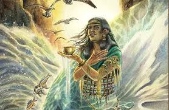
She represents the feminine power of the sea, just as some late Babylonian texts considered Dagon a dual deity with a female counterpart representing marine fertility. Such goddesses can be found in a variety of cultures, embodying a woman called the Sea Mother. Some scholars consider her the wife of Dagon or Maisky, the sea god.
Chinesse
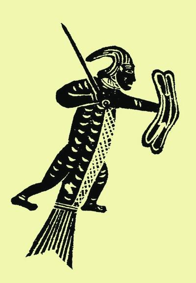
The mythical creature “Rén Yú” (Fish Man) was described in the Shan Hai Jing (Book of Mountains and Seas) as: “A being with the body of a human and the tail of a fish, living in the deep south, who wept pearls.” His tears turned into jewels, causing people to see him as a symbol of wisdom and universal sorrow.
Some bloggers such as Liu Shihong (刘世宏) and Ethan Nash have likened Rén Yú to ancient water deities such as Dagon and Enki, arguing that all are cultural representations of ancient cosmic water entities who taught humans agriculture and writing.
In Western blogs such as MythosArcana and HiddenCivilizations.net, the “Rén Yú” are said to be the Eastern version of the Atlantean mermaids who migrated to China after the “sinking of the first continent.”
Fu Xi is one of the most prominent legendary figures in ancient China, known as the "First Emperor" or "First Saint." He is said to have been born with a human body and the head of a snake or fish, somewhat resembling the half-human, half-fish creatures of other cultures. Fu Xi and Nu Wa (his sister and wife) are credited with inventing writing, fishing, animal domestication, agriculture, and marriage, as well as creating the "Bai Gua" (Eightfold Order), which is considered fundamental to understanding cosmic balance in Chinese philosophy.
The god Fu Xi, the first of China's legendary kings, is often depicted as half human and half snake or fish. He is said to have taught humans writing, fishing, and community organization—the same role as Owannes in Babylon and Dagon in Canaan.
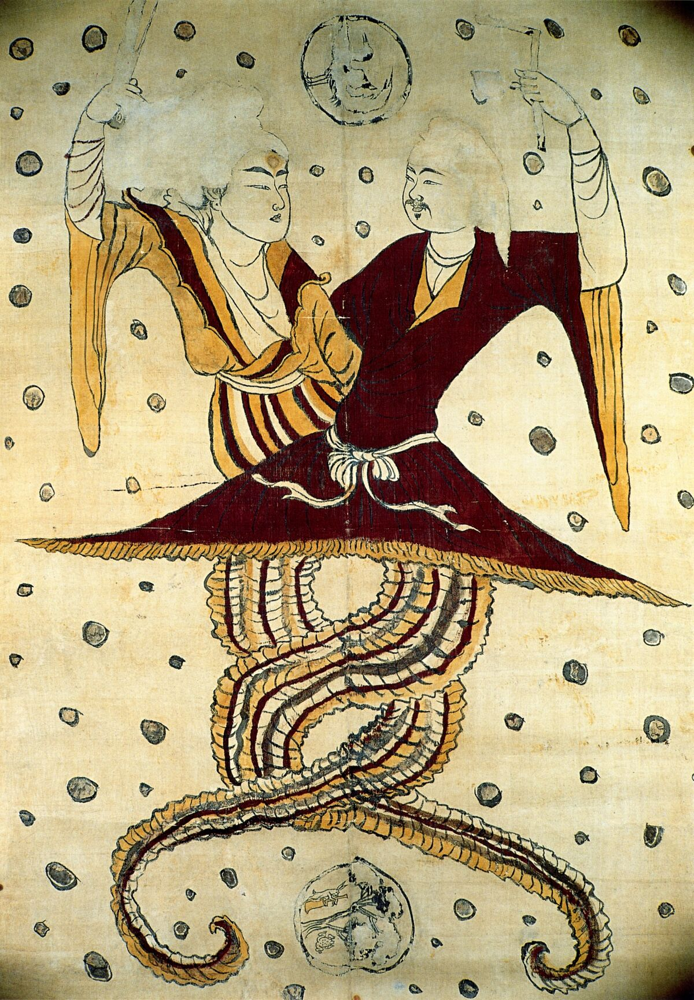
India
In Indian culture, the sea god appears as Matsya, one of the manifestations of Vishnu, half-fish and sometimes with a human face. Indian mythology says that Matsya saved humans and nature from the Great Flood, linking the sea and human life. Despite the difference in name and form, the goal remains the same: to protect humanity and the seas, just as Dagon does.
Southeast Asia and the Pacific
In Maori and Hawaiian cultures, we find manifestations of this deity as Tangaroa and Kanaloa. He was believed to protect sailors, ensure abundant catches, and form the focus of maritime rituals. These images once again demonstrate that this single sea deity takes on multiple local forms, but his essence remains the same: connected to water and marine life.
West and Central Africa
In West African mythology, the goddess Mami Wata, a half-human, half-fish creature of stunning beauty with long hair, is worshipped in countries such as Nigeria, Benin, Cameroon, and Congo.
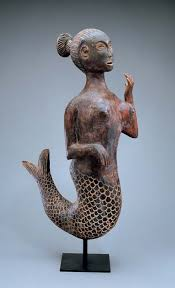
People say she rules the seas and rivers, bestowing wealth and beauty, but she can also drown those who betray her covenant. Some scholars describe Mame Wata as a spiritual heir to Dagon, a feminine manifestation of the same divine energy that embodied control of the sea and reproduction in Mesopotamian civilizations.
Some African bloggers even suggest that her name may be an evolution of an ancient Semitic word meaning “mother water” (water + wata = motherly water).
Egypt
In ancient Egyptian mythology, he has a deep connection to water, fertility, death, and rebirth, and there are actually symbolic similarities between him and sea gods or semi-aquatic creatures in other cultures, such as Dagon, Oannes, and Kanaloa, which we mentioned earlier.
In some ancient drawings (especially of later periods), he is depicted as half human and half underwater or plant (symbol of roots in water).
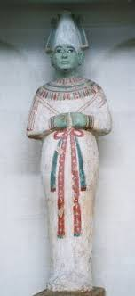
In some later Gnostic texts (such as the Book of the Dead, chapter 175), Osiris is referred to as “dwelling in the great waters”—leading some scholars to associate him with a spiritual or cosmic sea god.
Christianity
The church uses the name Ichthus instead of Dagon, which means fish in Greek. The church will tell you that Ichthus is an abbreviation for "Jesus Christ, God, Son, Savior," which translates into English as: Jesus Christ, God, Son, Savior. But in reality, it is a continuation of the worship of Dagon.
Dagon, the fish god, represents that god as a manifestation of the same patriarch who lived long in the waters of the Flood. Just as the Pope holds the key of Janus, so he wears the crown of Dagon. Excavations at Nineveh have put this beyond all doubt. The papal tiara is quite different from the crown of Aaron and the Jewish high priests. That crown was a turban. The two-horned crown worn by the Pope when he sits at the high altar in Rome and receives the adoration of the cardinals is the same crown worn by Dagon, the fish-shaped god of the Philistines and Babylonians.
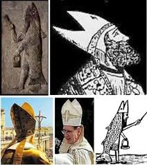
"Then the lords of the Philistines gathered them together for to offer a great sacrifice unto Dagon their god, and to rejoice: for they said, Our god hath delivered Samson our enemy into our hand. (Judges 16:23)"
Some sources, including the Catholic Encyclopedia1, say that Dagon is a merman, or that half of his body is that of a man, while the other half is fish. This belief stemmed from the interpretation that the name Dagon is related to the Hebrew word for fish, dag, and means “little fish.”
Islam
Traditional Muslim scholars did not directly use the term Apkallu, but they addressed the corresponding idea when interpreting the myths of previous nations. Their general stance is that the Apkallu are mythical or symbolic figures, or a distortion of the stories of early prophets, and they do not acknowledge the existence of half-fish, half-human beings as a historical reality.
Linking this to the prophets' stories, some suggested that the tales of the "First Teachers" might be a distortion of the stories of the Prophets Adam, Idris, or Noah, where wisdom and teaching were later attributed to "mythical beings" instead of the prophets. The fish symbol, for them, is interpreted as a water symbol, a ritualistic garment, or an indication of proximity to water, rather than a real body. The narrative of Oannes, who "emerged from the sea and taught humanity," is considered by them to be a pagan myth or a corruption of the concept of revelation.
The Islamic interpretation linking the stories of "First Teachers" (like the Apkallu) to the concept of prophethood is grounded in a fundamental Quranic principle affirming the universality of divine messages, based on verses such as: "And there was no nation but that there had passed within it a warner," and "And We certainly sent into every nation a messenger."The deduction drawn is that not all prophets were mentioned in the Holy Qur'an, suggesting the possibility that the names and stories of some may have been lost or significantly distorted over time. According to this interpretation, the narratives describing the Apkallu as wise, teaching beings transformed from their prophetic origins into mythical figures carrying the attributes of educating nations.
The Muslim scholars affirmed that prophets did not possess a half-fish body, emphasizing that the description of the fish-like form associated with beings like the Apkallu is a symbolic interpretation rather than a historical reality. They offered several explanations for this symbol, including: interpreting it as a ritual garment signifying water or purity, a symbol alluding to salvation after the Flood (indirectly referencing the story of Prophet Noah), or merely a cultural symbol that was misunderstood after the prophetic truth was lost over time. Finally, they suggested it could be a symbolic artistic depiction exaggerated by priests or scribes to enhance the mystery and sacredness surrounding those historical figures.
Some Islamic texts speak of "signs of God" and the transmission of knowledge through prophets before the Flood, and some interpret the Abkalu as symbols of this, inspired by the narrative of Noah (peace be upon him) as the founder of a new civilization. This is also found in books such as "Stories of the Prophets" by al-Tha'labi, which mention wise men before Noah.
In the story of the prophet Jonah, we all know he's eaten by a fish, and is regurgitated onto the shores of Mesopotamia. The Apkallu and Jonah are all wise men. Jonah must have been regurgitated in the Persian Gulf, and I've seen a post that says the Apkallu came from the East as well.
Some interpretations compare the fish-men of the Apicals to the story of Jonah, who was swallowed by a whale and then emerged to preach to his people in Nineveh (ancient Iraq, where Apical inscriptions have been found). Jonah is seen as a wise man emerging from the sea to teach, similar to the Oannes, both figures associated with wisdom and the Flood. This connection is common in historical forums but informal in Islamic jurisprudence.
Research
The seven Antidelphic sages of Apsu (before the Flood) were created by the god Ea from the Apsu (the fresh waters underground, a symbol of wisdom and waters). The first of them was Adapa (or Awan/Oanis in Greek according to the Babylonian priest Berossus in the third century BC), a priest from the city of Eridu who is described as a hunter or cook who ascends to heaven after a hunting accident, and refuses the food and drink of immortality by order of Ea, to return as a teacher to mankind.
They taught humans writing, science, crafts, city building, temple construction, agriculture, laws, and land measurement. After the Flood, the sages transformed into humans (ummanu), like Lo-Nana, who is described as being "two-thirds Apkalu." They also had a protective role: their statues (made of plaster or clay) were buried under floors or placed at doorways to ward off evil, and they carried purification tools such as a cone and a bucket.
They are depicted as hybrid beings, men wearing fish-skin (fish-apkallu), a symbol of their origin from the waters. Inscriptions from the Kassite period (16th-12th centuries BC) to the Neo-Assyrian period (9th-7th centuries BC) in palaces such as Nimrud and Nineveh show them as guardians.
In some texts, such as the Malqo (anti-magic texts), they are depicted as malevolent beings capable of magic and sorcery, associated with demons or "the villains of Ea." In the Epic of Era, Marduk sends them to the Apsu after the Flood, thus altering the world order.
Some research, based on inscriptions, statues, and texts such as the "Legend of Adapa" (from the Old Babylonian to the Neo-Assyrian periods) and the "History of Berossus," describes the Awanis as a being emerging from the Persian Gulf to teach. Studies like those on the "Beth Misri" (protective rituals) demonstrate their use in protective magic.
In his 2010 study, researcher Amar Annus proposes that the origin of the "Watchers" figures in ancient Jewish writings is derived from the Apkallu, but with a reversal of their nature. He posits that the Watchers became evil beings who taught forbidden knowledge, viewing this as a reaction against the authority of Mesopotamian sages. Annus emphasizes that the evil aspect of the Watchers is partly derived from the demonic side of the Apkallu found in texts like "Malku," and is not simply an original Jewish invention.
In his studies conducted between 1992 and 1994, researcher Frans Wiggermann describes the Apkallu beings as protective spirits mixed with demons. Wiggermann suggests that these beings were derived from foreign sources in Assyrian art, and he links their symbols and forms to apotropaic magic.
Cuneiform Texts
Bīt Mēseri
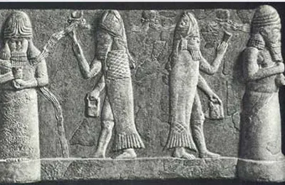
"The pure fish purādu, the fish purādu of the sea, the seven of them, the seven Apkalu, who were born in the river, who manage/maintain the plans of heaven and earth."
purādu ellūti purādu tāmti sebettu ša ina nāri ibbanû sebettu apkallū mušaklilū usurtu šamê u erṣeti
He then lists their names (such as Uanna/Oannes I, Uannedugga, Enmedugga, etc.) and affirms that they are "pure fish" sent by the god Enki/Ea from the Apsu (divine subterranean waters). This description aligns with Assyrian inscriptions depicting the Apkalu wearing fish-cloaked apkallu as a symbol of wisdom and fertility from the aquatic underworld.
The text describes how to make statues and drawings of the apkallū and place them in the patient's house as part of the exorcism ritual, and refers to fish-cloaked statues or "fish-man" creatures used as protectors.
This theory proposes that ancient texts such as Bīt Mēseri and the mentions of Oannes reflect the memory of an advanced coastal or riverine civilization that was destroyed by cataclysmic floods. These groups persisted in the collective memory of later peoples in the form of "supernatural beings." According to this perspective, the "fish" symbol does not imply that they were literally "half-fish" biological entities; rather, the symbol arose because these groups inhabited coastlines, relied on fishing, and possessed sophisticated navigational and engineering knowledge. Thus, the imagery originated as an expression of the aquatic lifestyle that defined this civilization before its disappearance.
Poem of Erra
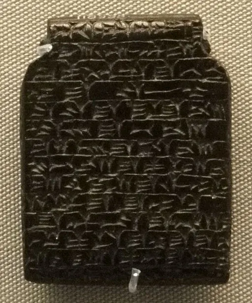
The Poem of Erra is a Babylonian literary text dating from approximately the 8th century BC, and it has been found in multiple Assyrian and Babylonian versions. In this text (specifically in Tablet I or II, lines 147-162), the god Marduk poses a fundamental question:
"Where are the seven sages of the Apsu, the pure fish (purādu), who, like their lord Ea (Enki), granted great wisdom?"
This passage underscores the spiritual and symbolic significance of these sages, characterizing them as "pure fish" from the fresh underground waters, which reinforces their role as the custodians of divine wisdom in Mesopotamian belief systems.